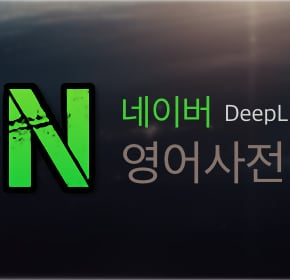

네이버 영어사전 크롬 확장프로그램
DeepL 번역 API
연동하기

파파고 API 유료화로 인해 네이버 사전 크롬 확장 프로그램 6.0부터는 문장 통번역 API가 DeepL로 변경되었습니다.
DeepL API 무료 버전을 사용하면 한 달에 500,000단어까지 무료로 이용할 수 있으니 아래 내용을 참고해 이용하세요. 참고로 DeepL 크롬 확장 프로그램을 이용하면 더욱 상세한 설정이 가능합니다. 드래그했을 때 바로 번역되는 편리함을 계속 쓰고 싶으면 네이버 영어사전(DeepL)을 이용하시고, 드래그 후 단축키를 한 번 더 눌러도 상관없다면 DeepL 확장 프로그램을 이용하시는 걸 추천합니다.
DeepL API 인증키 받기
DeepL API 웹사이트에서 DeepL API Free 무료 회원가입을 진행합니다. 무료 회원가입 시 신용카드가 필요합니다. 월 500,000단어까지 사용량 제한이 있지만 별도의 요금은 청구되지 않는다고 합니다.
회원가입 후 DeepL 계정 페이지로 이동해 아래 그림과 같은 DeepL API 인증키를 복사합니다.


이후 웹페이지에서 문장 번역에 해당하는 트리거 키를 누르고 영어 문장이나 단락을 드래그하면 한글 번역이 표시됩니다.